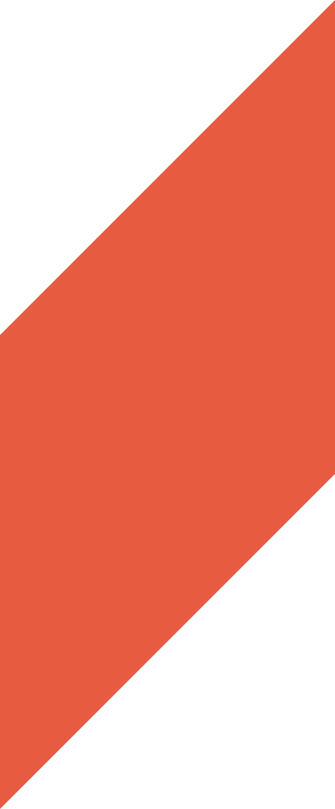

I am an interactive designer/developer studying Interactive Media at NYU Abu Dhabi. I provide technology-powered creative design solutions to complex problems.
New York University
Abu Dhabi
2019 - Present
Bachelor of Art
Major in Interactive Media
Minor in Film & New Media
and Design
Cumulative GPA: 3.96
Hall Pass Studios
UI/UX Design Intern
Jun 2021 - Dec 2021
Labocine
Creative Consultant Intern
May 2020 - Aug 2020
StartAD DeepTech Incubator
Summer 2020
Sketch & Wireframe
Prototype
Visual Design
User-Testing
UX Research
Color Correction
Post-Production
Game-Design
Play-Testing
Digital Marketing
English
Korean
Mandarin
Figma
Adobe Creative Suite
Autodesk Fusion 360
Davinci Resolve
Arduino
Godot
ProTools
Logic Pro X
HTML / CSS
JavaScript
Python
p5.js
Processing